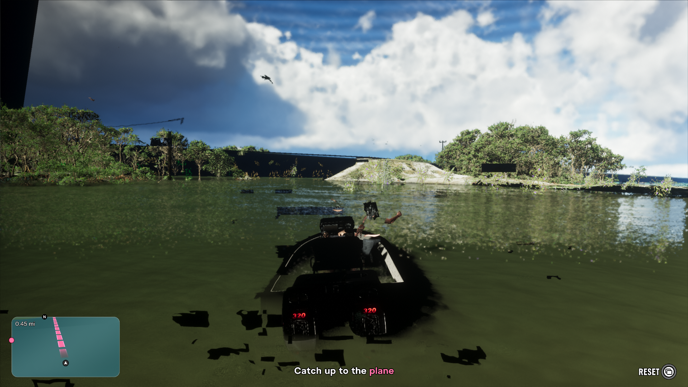

原始水面着色器正确绘出了五种受控分块图案
一项独立测试分别在 RTX GPU 和 WARP 软件渲染器上，把五组已知位图案传给原始水面顶点着色器。两者的像素覆盖与预期完全一致。全空为 0，全满为 14,400，左半区为 7,200，选定位为 1,312，最高位为 288。这些输入由测试提供。G24 黑块帧中实际传给着色器的分块值仍待采集。 查看水面着色器测试 →


快艇停着不动。上一帧船尾旁还能看见水面，下一帧就被黑色矩形遮住。对照两个固定像素，清晰帧中的水面着色器写入了颜色，异常帧中两处都保持为零。视口没有变化。
G22 和 G23 都抵达了营地，角色也实际走到了翻扣的船体旁。在同一块 GPU 的河面测试中，G25 实际显示每秒 5.108 帧，G23 为 5.257 帧。快艇路线仍显示 0.45 英里。
对照连续三帧河面 →一项独立测试分别在 RTX GPU 和 WARP 软件渲染器上，把五组已知位图案传给原始水面顶点着色器。两者的像素覆盖与预期完全一致。全空为 0，全满为 14,400，左半区为 7,200，选定位为 1,312，最高位为 288。这些输入由测试提供。G24 黑块帧中实际传给着色器的分块值仍待采集。 查看水面着色器测试 →
渲染团队已测试采集水面分块掩码上相邻九格的工具，正在为下一次游戏对照打包。目前还没有实机掩码数值。
G22 在栈道场景跳过了这个原始着色器。修正后的译码现已能在 RTX 5090 上创建原生管线。在独立计算测试中，448 个输出值全部相符，周边 28 个保护值也保持完整。对栈道画面的实际效果仍待游戏验证。
本次核查时，该问题下没有评论，尚未确认任何排名。 查看 PortWatch 第 69 号提报 →
G24 的连续三帧中，先是右上方出现黑块，接着河面清楚显现，然后左下方又被黑块遮住。在第 4169 帧，两个原始水面着色器分别为原生坐标 (1120, 736) 和 (1216, 1008) 写入了颜色。到了第 4170 帧，同一对像素经过这两次绘制后仍为零，后续光照只增加约 0.0001。两帧的全屏视口、裁剪范围和间接绘制输入地址都相同。缺色的原因尚未确定。 对照连续三帧河面 →
以下为各项工作的分工和最近确认时间，均为 UTC。
正打包九格水面分块掩码采集，以追查两个丢失颜色的像素。
已复现 G24 快艇检查点并提供连续三张原始画面。G22 的角色也已步行抵达小艇。
在 G23 营地步行后，于静止河面航点对照了 G25 与 G23。
已在驱动上验证不透明分块程序和透明度预滤波程序，正在核对原始程序的实机执行情况。
PortWatch 第 69 号提报仍开放，暂无评论，也没有已确认的排名。
已核对八张河面与栈道原始画面、两个水面像素以及两组帧率记录。